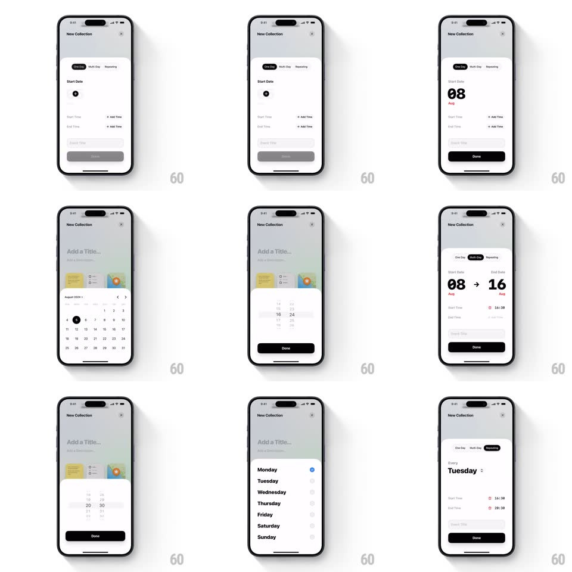

Media
Frame-by-frame

Rebuild this interaction 1:1: Canopi's collection date picker - One Day / Multi-day / Recurring tabs morph a schedule form, with a calendar sheet, big-date readout, and wheel time pickers.

Rebuild this interaction 1:1: Canopi's collection date picker - One Day / Multi-day / Recurring tabs morph a schedule form, with a calendar sheet, big-date readout, and wheel time pickers. ## Integration Integration: stack-agnostic spec - springs given as stiffness/damping, timed motions as duration + curve; map every value to your framework and animation library of choice. ## Scene A "New Collection" form (title field, description) with a segmented control: One Day, Multi-day, Recurring. Below it a schedule area: Start Date with a big "08 Aug" readout, Start/End Time rows with "+ Add Time", and a black Done button. Tapping fields opens bottom sheets - a month calendar, an hour/minute wheel, a weekday chooser. ## Motion spec Pattern: morphing tab content + bottom-sheet pickers. - Tab switch: the active pill slides under the selected tab (spring ~420/26) while the schedule area crossfades and subtly slides (translateX +-20px, 250ms) - One Day shows one date, Multi-day shows "08 -> 16 Aug" with the arrow drawing in, Recurring shows "Every Monday" with the weekday name morphing letter-by-letter when changed. - Big date readout: digits flip like a split-flap (top half hinges down, 250ms per digit) when the date changes; the red month label crossfades. - Calendar sheet: slides up over a dimmed form (spring ~380/26, drag-to-dismiss with velocity); the selected day stamps with a circle that draws (stroke, 200ms) then fills. - Time wheel sheet: columns spin with momentum and detent-snap (friction ~0.94/frame, snap spring ~500/30); the settled value flashes once (opacity 1 to 0.5 to 1, 200ms). - Pickers commit on sheet dismiss: the form row's value rolls in vertically (180ms) and Done enables (fills black, 150ms). ## Calibration - Only one sheet at a time; switching fields mid-sheet swaps content inside the same sheet (250ms crossfade) instead of stacking. - Multi-day end date can't precede start: earlier days dim to 30% opacity and ignore taps. ## Reduced motion Sheets fade in; digits set without flip. ## Don't miss - The big-date treatment (huge day numeral, small red month) is the form's signature - keep it, not a plain text field. - Recurring rows show times with small red clock icons; the red accent appears nowhere else.